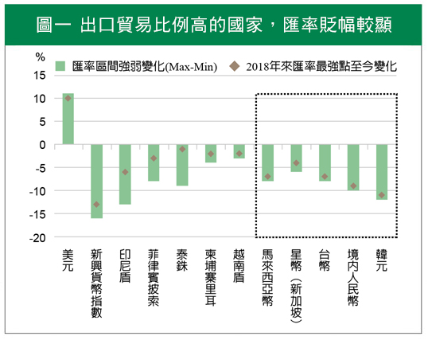
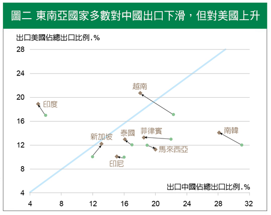

中美貿易戰持續延燒，全球經濟活動趨緩，雙方未來可能進一步成為長期政治角力，讓原為世界工廠的中國首當其衝。中國出口商和外國企業為避免高額關稅，紛紛另起爐灶，轉往鄰近的東南亞國家設廠。在中美貿易彼此競合下，哪些東南亞國家可能因此而受惠？或存投資契機？
一、 聯準會寬鬆稍緩解資金外流，中美貿易紛擾對出口國壓力仍顯
東協若以組成結構來看，新加坡、馬來西亞和泰國為貿易順差國，進出口對經濟成長貢獻度高。印尼、菲律賓以內需消費為主，且為貿易逆差國。東協國家體質不同，使得國內外因素造成影響各異。
今年中美貿易熱戰下，全球貿易量與製造業活動大幅萎縮，以出口導向的東協經濟體因此受到衝擊。仰賴轉口貿易為主的新加坡，貿易量下滑對經濟造成負面影響，匯率在今年偏弱呈現(圖一)，此一現象在馬來西亞上也可看見。

註：虛線框表示以出口導向為主。
資料來源：Bloomberg。統計時間：2018/1/1-2019/7/9。
二、從中國而來的轉單效應，在越南及馬來西亞較明顯
東南亞國家過去多以中國為第一大出口國，其次為日本與美國。在中美貿易發展惡化後，憑藉著低廉人力和土地成本優勢，加上與中國地緣之便，政府友善經商環境等推波助瀾下，東南亞的大型製造工業區受到市場重視，如泰國東部走廊、越南平陽工業區和柬埔寨的曼哈頓經濟特區等，成為外商自中國遷移後的首選遷入地。
今年上半年中國對美進出口皆呈現衰退，中美互相加徵關稅結果，美國轉而從東南亞國家進口相關商品，使得今年以來越南出口年增率持續上揚，以及馬來西亞出口開始止跌回升。
對比今年4月和去年12月底時，亞洲國家出口資料，可見多數國家對中國出口佔比下滑，但對美國出口比例增加(圖二)。南韓和越南此現象最明顯，其次為泰國和印度。中國對美國的部份出口貿易，轉由前述亞洲國家所取代。
從貿易轉單中受惠的東協國家，也可從區域聯盟裡看出端倪。同時加入美國主導的TPP (跨太平洋貿易夥伴)，與東南亞國家發起由中國主導的RCEP (區域全面經濟夥伴關係協定) 者，包括越南、馬來西亞和新加坡等國(圖三)，2018年第四季與2019第一季外國人直接投資額(FDI)，年增率呈雙位數成長。其中又以越南年增79%，與馬來西亞成長95%最為顯著。

註：棕色為2019年4月資料，綠色為2018年底資料。資料來源：Bloomberg

資料來源：RCEP，TPP官方網站。
三、全球景氣衰退機率上升，東協股易受國際資金連動
整體而言，中美貿易戰火重啟，全球企業調整供應鏈佈局下，目前越南可望成為轉單直接受惠國，外資也相對看好馬來西亞，預期能從財政隱憂中逐漸改善。長期經濟發展，則以印尼和菲律賓較有內需支撐。
過去美股與東協股市有著高度相關，股市波動易受外資影響。因此，儘管近期轉單效果與消費內需支撐，足以稍抵貿易下滑對實體經濟的衝擊，但若美國面臨衰退，或全球股市波動加大時，東協股市仍難置身事外。
建議現在對東協資產的投資，需持審慎樂觀態度，逢股市大跌再分批佈局。畢竟，身處景氣循環的末升段，持盈保泰仍為上策。
【揭露事項與免責聲明】
本報告為國泰世華銀行（下稱“本公司”）提供尊貴理財客戶之參考資料，並非針對特定客戶所作的投資建議，且在本報告撰寫過程中，並未考量讀者個別的財務狀況與需求，故本報告所提供的資訊無法適用於所有讀者。
本報告係根據本公司所取得的資訊加以彙集及研究分析，本公司並不保證各項資訊之完整性及正確性。本報告中所提出之意見係為本報告出版當時的意見，邇後相關資訊或意見若有變更，本公司將不會另行通知。本公司亦無義務持續更新本報告之內容或追蹤研究本報告所涵蓋之主題。本報告中提及的標的價格、價值及收益隨時可能因各種本公司無法控制之政治、經濟、市場等因素而產生變化。本報告中之各項預測，均係基於對目前所得資訊作合理假設下所完成，所以並不必然實現。本報告不得視為買賣有價證券或其他金融商品的要約或要約之引誘。
國泰金融集團（下稱“本集團”）所屬各公司可能個別基於特定目的且針對特定人士出具研究報告、提供口頭或書面的市場看法或投資建議（下稱“提供資訊”），鑑於提供資訊之單位、時間、對象及目的不同，本報告與本集團其他單位所提供資訊可能有不一致或相牴觸之情事；本集團所屬公司從事各項金融業務，包括但不限於銀行、保險、證券經紀、承銷、自有資金投資、資產管理、證券投資信託等。本集團各公司對於本報告所涵蓋之標的可能有投資或其他業務往來關係，各公司從事交易之方向亦可能與本報告不一致，讀者應審慎評估自身投資風險，自行決定投資方針，不應以前述不一致或相抵觸為由，主張本公司或本集團其他成員有侵害讀者權益之情事。